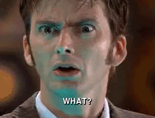

Where to even begin with episode VIII.. This was the most aggressively devisive film within any fanbase that I have been aware of. Here we see the fruit of the bad seed planted at the executive level at Disney. When JJ Abrams wrote Episode VII, he wrote out an outline for what he expected the trilogy to cover, including all the plot points that he started in VII. Episode VIII's director Rian Johnson decided to take the series in a new direction and ignore most of JJ's plan. There was a lot of good because of this, and lots of bad. Because I need some table content in my practice assignment I will list some pros and cons in a table.
| Pros | Cons |
|---|---|
| Fun new visuals and special effects! | Bizarre and convoluted plot lines. |
| Interesting new creatures, all of them were fun and distinctive, if we erase the trauma of that one. | That creature... |
| Seeing Leia intentionally use the Force. | The way Leia uses the Force.. |
| A genuinely refreshing and nuanced take on the Good vs evil debate that has been the backbone of the series. | The weird goose chase for the hacker, that was resolved?? |
| A great cameo of Yoda showing interesting lore of the history and foundations of the Jedi Order. | The Fin and Rose side quest in general, but in particular the casino scenes. |
| Open discussion on the fallibility of the Jedi | The Captain Phasma storyline build up to nothing, completely missing its huge potential.. |
| Luke's appearance in the end fight scene and the way his projection is revealed. | Luke's death that made him feel completly wasted as a character from start to finish. |
| A real and more grounded view of the 'regular world' still happening around the galaxy | Rey "training" by wildly swinging a lightsaber around and that somehow develops a skill. |
| Holdo's plan to escape that doesn't actually make any sense, and the bizarre fact that she kept it from everyone just for the sake of building tension in the plot. | |
| The general sense that many of the new technologies and creatures were included just for toy sales. | |
| The literal dumping on fans by how Luke's character was handled, and the bad attitude about it in the press. | |
| The reversal on Luke's moment of learning to let go of the past by accepting the buring of the ancient texts by Rey keeping the ancient texts anyways. | |
| Many intriguing plot points that were thrown out the window for the reaction factor: Luke throwing the lightsaber, Snoke's death, Kylo Ren deciding to kill his mother but she survives anyways.. | |
| All the conflict rising up to ask are the Jedi actually good, including the title being 'The Last Jedi', just to get the title push in the end with Luke saying, I am not the last Jedi, and throw all that intrigue away. | |
| 8 Pros | 14 Cons |
From that list you may get the sense of frustration that many experienced after seeing the movie. Much of it felt like it was written to spite the fanbase, and I'm afraid to say that I believe it was. Somehow Rian Johnson came on board the project with the idea that he had been handed one movie in an episodic series that would continue to be reworked and revamped regardless of what he did. In short he treated it like a James Bond movie, where he could come make a splash in the series, and later other directors would do the same, without having to worry about an overarching story or plot. He did not treat it like the lead up to the conclusion of a 9 part story. This should have been the penultimate chord with the leading tone thrusting us towards a well built and prepared ending. Instead he wanted to "subvert expectations" for Star Wars movies. In one of the most classic storys of good vs evil, depicting the good Jedi vs the evil Sith, he decided that dumping that on its head was the best way to make a name for himself as a director. So instead of pushing us towards a new, more nuanced ending, he disregarded JJ's interesting plot points for the shock of it, then pooped on all of the fans by saying Jedi aren't actually the good solution, then just to pull the rug out from under us again, he finished it by saying, just kidding, haha, they are the good guys. The convolution of it all makes it hard to even describe. All of this was done to intentionally make a splash in the genre, by going against the grain. I can't imagine what possesed the executives and producers to allow the movie to go in any direction the director wanted without any oversight to make sure that the overarching plot would still make sense. Not only did they throw out the Legend storylines, and George Lucas' storyline, but Rian Johnson also threw out JJ Abrams' storyline just to slap us in the face with it.
